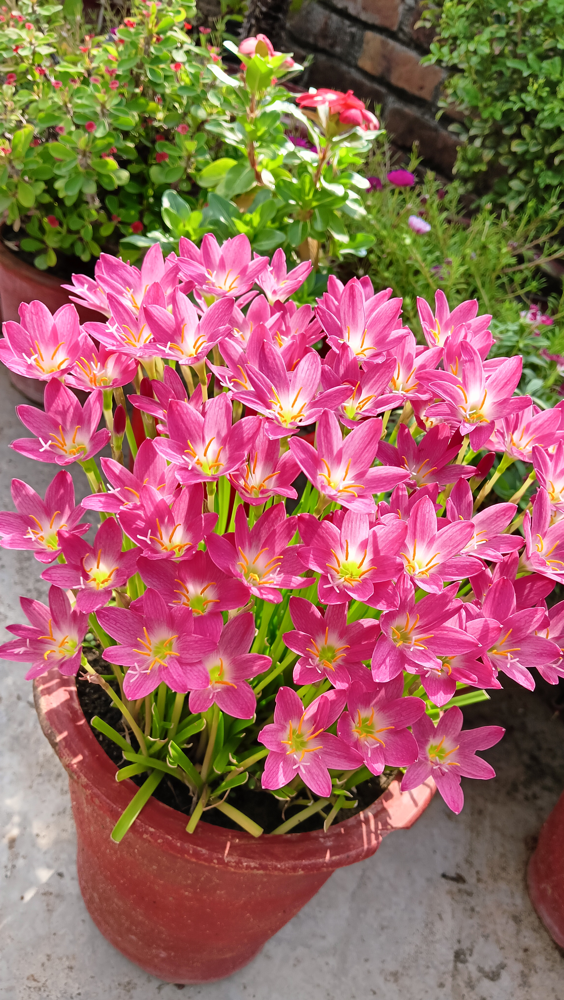
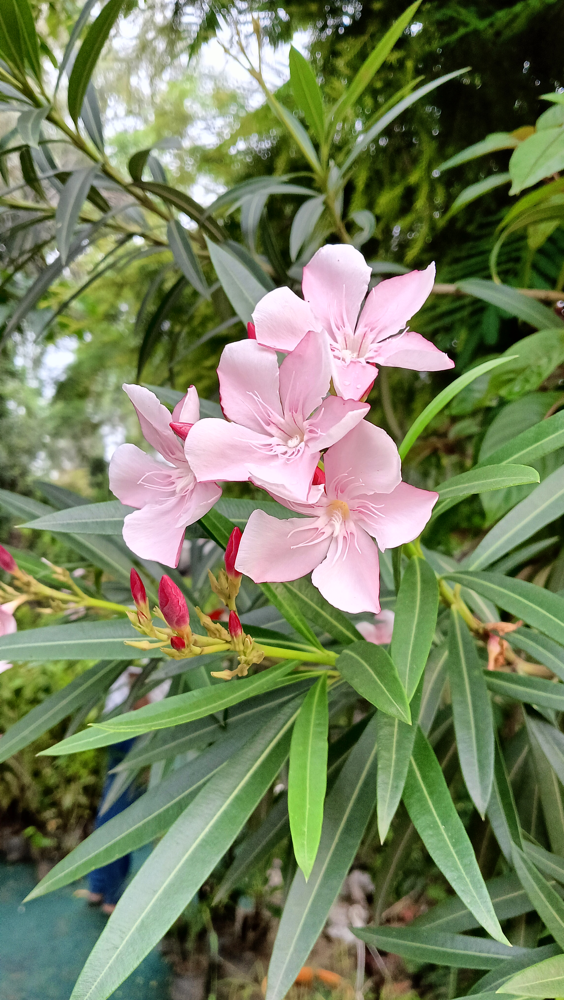
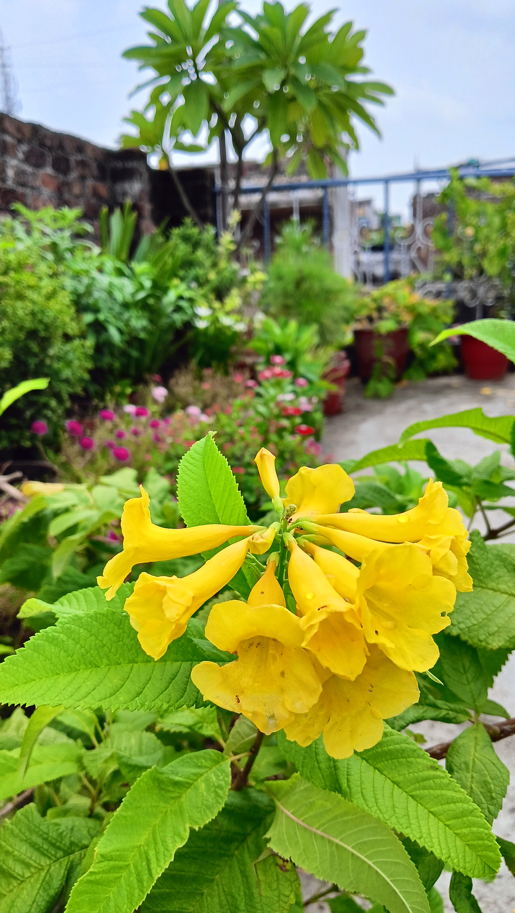
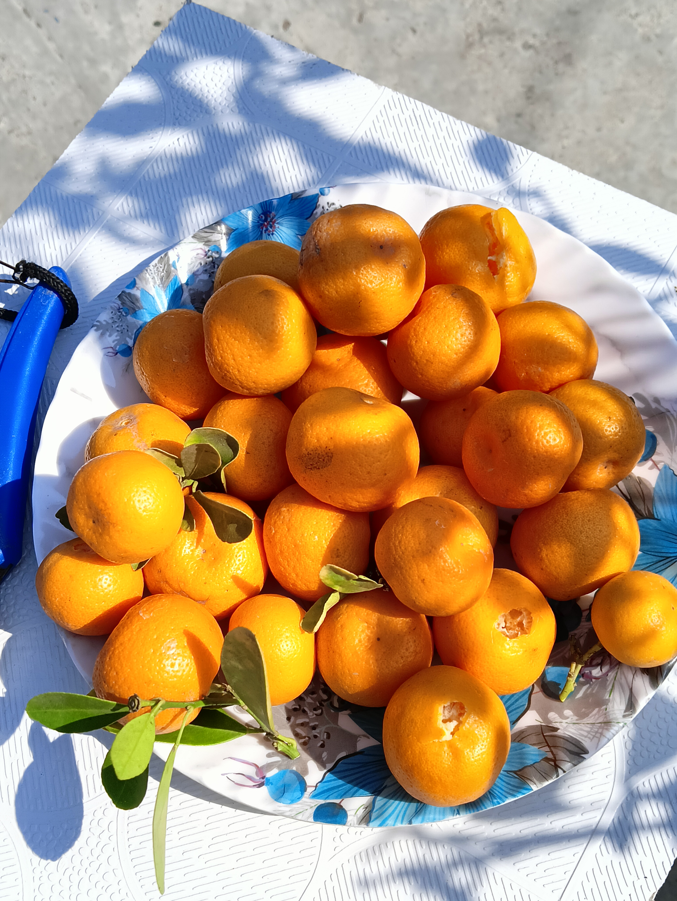
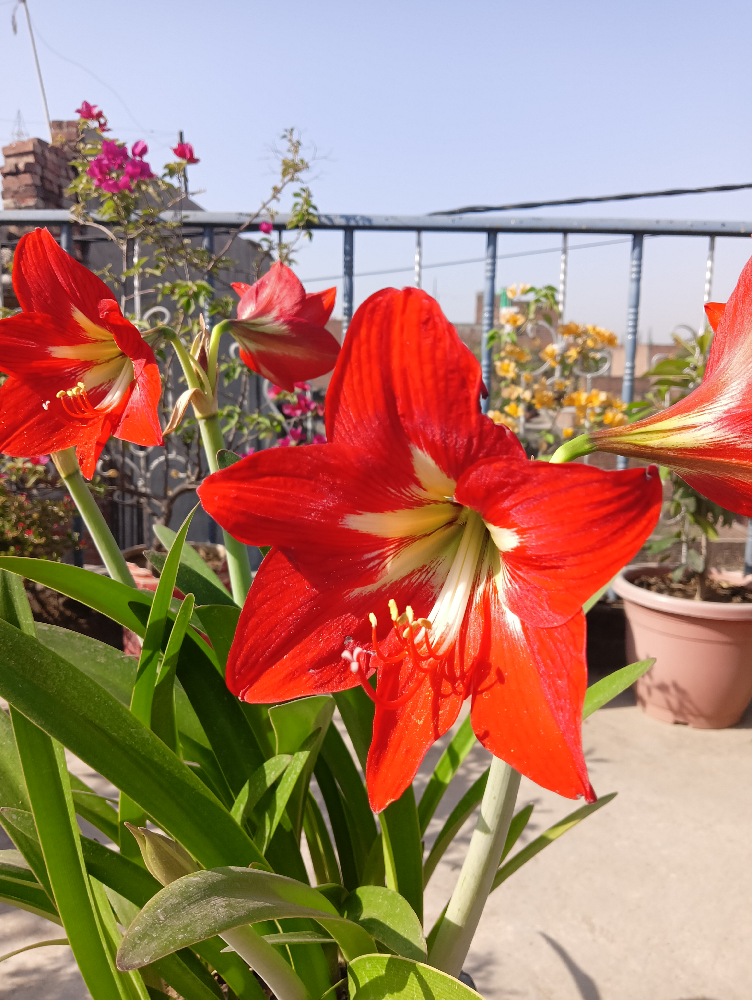

Arshmi The Gardener
Hi, I’m Arshmi 🌿 I genuinely enjoy spending time with plants... watching them grow, taking care of them, and noticing the little changes every day. Gardening is not just a hobby for me, it’s something that makes me feel calm and connected. At the same time, I’m an MCA student, currently learning web development and problem solving. In a way, both coding and gardening teach me the same thing... patience, consistency, and growth over time. I created this space to share my gardening journey, simple tips, and small learnings from everyday life. It’s just a little corner where I document what I love and what I’m learning along the way.
A peaceful corner of my garden 🌿
one of my favourite rain lily 🌸

Tiny terrace oranges in my terrace garden 🍊

Red lilies blooming 🌷
A little DIY project 🏡
This little corner of the internet is where I share my plant stories, gardening tips, blooming successes, and (yes!) the not-so-perfect plant moments too. Whether you're a seasoned gardener or just starting with your first potted friend, I’m so happy you’re here.
Date: 15 July 2025
This is my little green world—filled with plants, memories, and the simple happiness they bring into my life.
I want to share what I learn, the mistakes I make, and all the tiny victories in between.
I'm so happy to see you here — really. 🌿💛